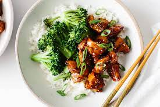

Chicken Teryaki Recipe

Ingredients
- 1.3 pounds (600 grams) skinless boneless chicken thighs, cut into 1 1/2-inch pieces
- 1 tablespoon cooking oil
- 1/4 cup low-sodium soy sauce
- 3 tablespoons light brown sugar (or white granulated sugar)
- 3 tablespoons cooking Sake ((rice wine vinegar or apple cider vinegar)
- 2 tablespoons Mirin (optional -- white wine or dry sherry can be substituted)
- 1 tablespoon sesame oil, optional (adds a wonderful flavour)
- 2 teaspoons minced garlic (2 cloves garlic)*
- 1 shallot/green onion stem, sliced to garnish
- 4 cups broccoli florets, lightly steamed
- 1 teaspoon cornstarch (or corn flour) mixed with 2 teaspoons water (ONLY IF NEEDED)
Instructions